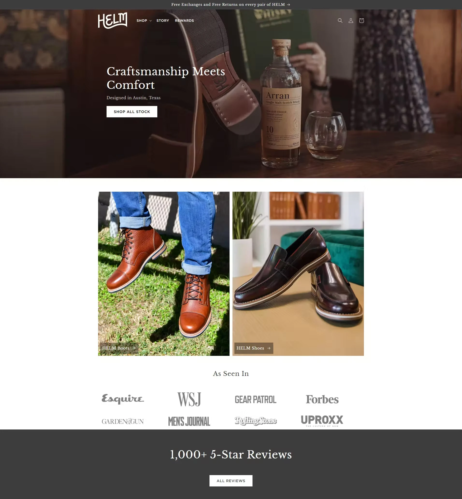
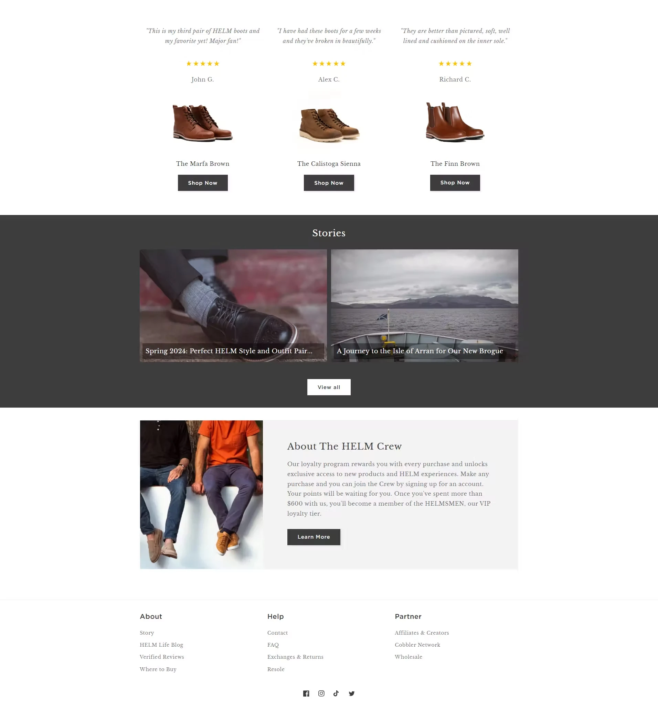
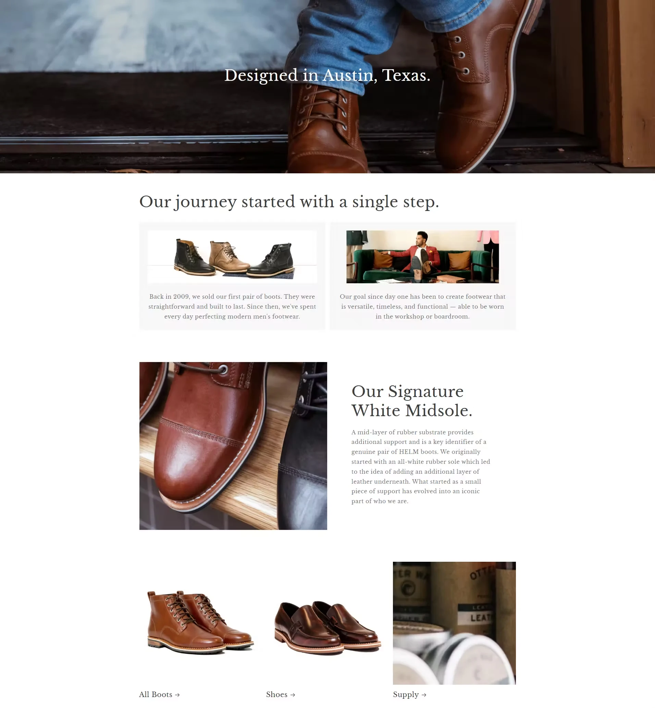
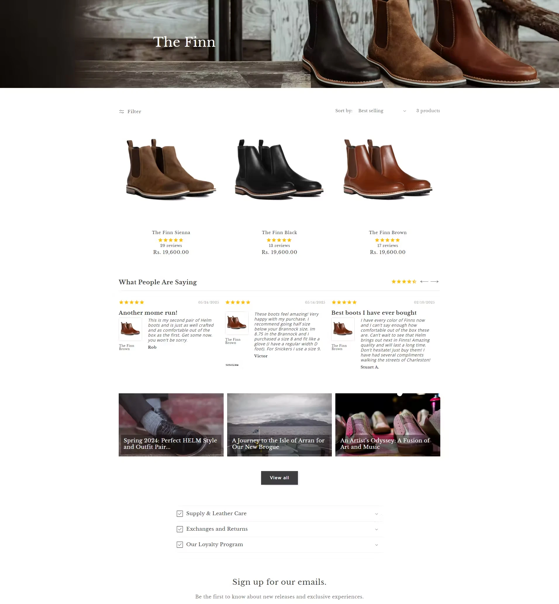
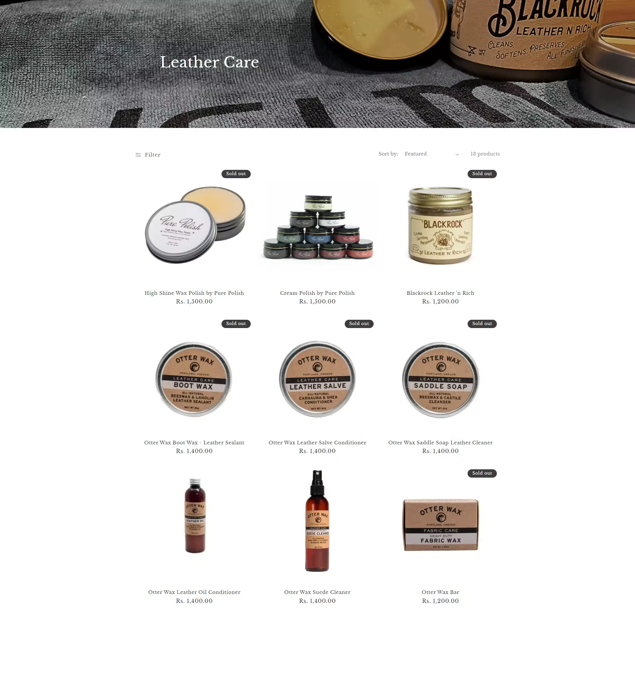
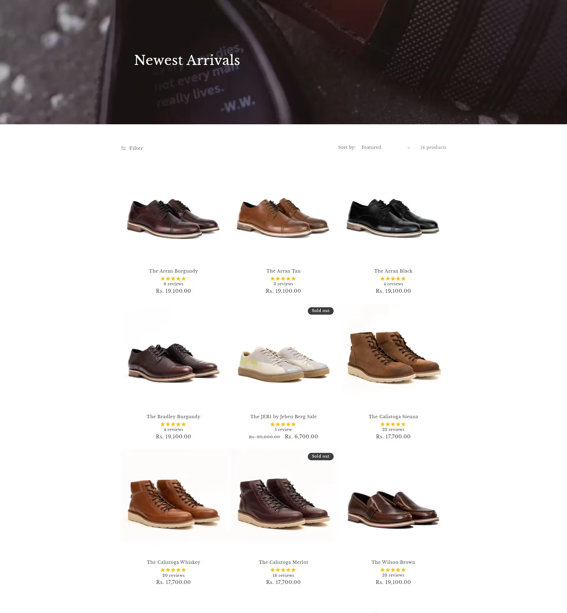

Implementing SharePoint & M365 for Industrial Air Conditioning Company
Atmos, a part of Kabu Projects, is a fast growing industrial solution provider. As the company grew, they identified a number of inefficiencies that stemmed from using many disparate internal tools and manual processes.
Book a Free ConsultationIntroduction
Atmos, a part of Kabu Projects, is a fast growing industrial solution provider. As the company grew, they identified a number of inefficiencies that stemmed from using many disparate internal tools and manual processes.
Employees were struggling to adequately manage essential functions of the business such as tracking sales orders, accessing invoices, monitoring service orders, processing product returns, and managing documents and contracts.
Organizational knowledge suffered through scattered systems, and employees often relied on email or informal, offline requests to manage processes, resulting in delayed information, duplicated efforts and limited transparency.
- Project Name
- Moviez-World Cinema
- Location
- Global
- Industry
- Media & Entertainment
- Category
- On-Demand Streaming App
- Services Offered
- Design & Development
- Technologies
- React Native, Node.js, Mongo DB, AWS


Atmos, a part of Kabu Projects, is a fast-growing industrial solution provider. As the company grew, they identified a number of inefficiencies
Atmos, a part of Kabu Projects, is a fast growing industrial solution provider. As the company grew, they identified a number of inefficiencies that stemmed from using many disparate internal tools and manual processes.
Employees were struggling to adequately manage essential functions of the business such as tracking sales orders, accessing invoices, monitoring service orders, processing product returns, and managing documents and contracts.
Organizational knowledge suffered through scattered systems, and employees often relied on email or informal, offline requests to manage processes, resulting in delayed information, duplicated efforts and limited transparency.



Atmos, a part of Kabu Projects, is a fast-growing industrial solution provider.
Atmos, a part of Kabu Projects, is a fast growing industrial solution provider. As the company grew, they identified a number of inefficiencies that stemmed from using many disparate internal tools and manual processes.
Book a Free ConsultationProject Challenges
Creating an on-demand global movie streaming app is a complex task that goes far beyond just delivering the video content. Entering the OTT space may sound simple, but the client majorly lacked the scalable infrastructure needed to support high-definition video delivery to users across different regions.
- The client was seeking to create a scalable multi-language content delivery and management system.
- Working has to offer a smooth, buffer-free HD streaming experience across global regions and networks.
- Struggling to integrate secure, globally accepted payment gateways like Stripe and Apple In-App Purchase.
- Challenging to meet the engagement of users and create a cinematic user interface for mobile and smart TV users.
- For personalized recommendations, it is required to implement an AI-based recommendation engine.
Our Solution
Atmos, a part of Kabu Projects, is a fast growing industrial solution provider.
Atmos, a part of Kabu Projects, is a fast growing industrial solution provider. As the company grew, they identified a number of inefficiencies that stemmed from using many disparate internal tools and manual processes.
Employees were struggling to adequately manage essential functions of the business such as tracking sales orders, accessing invoices, monitoring service orders, processing product returns, and managing documents and contracts. Organizational knowledge suffered through scattered systems, and employees often relied on email or informal, offline requests to manage processes, resulting in delayed information, duplicated efforts and limited transparency.
Key features developed with the solution.
Admin Panel
- For personalized recommendations, it is required to implement an AI-based recommendation engine.
- For personalized recommendations, it is required to implement an AI-based recommendation engine.
- For personalized recommendations, it is required to implement an AI-based recommendation engine.
User App
- For personalized recommendations, it is required to implement an AI-based recommendation engine.
- For personalized recommendations, it is required to implement an AI-based recommendation engine.
- For personalized recommendations, it is required to implement an AI-based recommendation engine.

CloudConverge empowered the Moviez app to deliver access to vast content library supporting multiple languages and delivering an overwhelming cinematic. movie watching experience to the users.
Book a Free Consultation- 01
Atmos, a part of Kabu Projects, is a fast-growing industrial solution provider. As the company grew, they identified a number.
- 02
Atmos, a part of Kabu Projects, is a fast-growing industrial solution provider. As the company grew, they identified a number.
- 03
Atmos, a part of Kabu Projects, is a fast-growing industrial solution provider. As the company grew, they identified a number.
- 04
Atmos, a part of Kabu Projects, is a fast-growing industrial solution provider. As the company grew, they identified a number.
- 05
Atmos, a part of Kabu Projects, is a fast-growing industrial solution provider. As the company grew, they identified a number.
- 06
Atmos, a part of Kabu Projects, is a fast-growing industrial solution provider. As the company grew, they identified a number.
Our agile app development process and strategy for Tap Retail.
At CloudConverge, we delivered Tap Retail through a clear, agile-driven development framework focused on rapid iterations, continuous feedback, and future scalability. From planning to deployment, our approach ensured a seamless product journey and elevated operational performance.
Strategize and Analyze
We began with market research, competitor benchmarking, and technical planning to define goals, user flows, and core platform architecture.
Design and Prototype
Wireframes and interactive UI mockups were created with a cinematic look, emphasizing intuitive navigation and cross-device compatibility for global users.
Develop and Integrate
Weekly agile sprints enabled modular feature development, secure Stripe integration, multilingual tagging, and smart TV optimization with seamless backend workflows.
Test and Optimize
Every sprint included QA, device testing, and performance tuning to ensure HD playback, responsiveness, and uninterrupted viewing across regions.
Scale and Sustain
Post-launch, we scaled infrastructure on AWS, deployed updates via CI/CD pipelines, and integrated analytics for ongoing user engagement and growth.